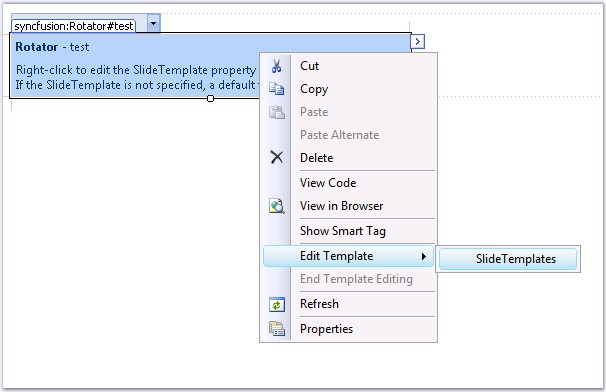
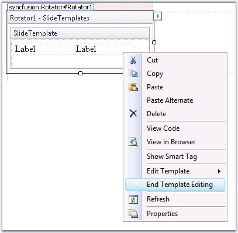

This tutorial shows how to use templates to customize the layout to include child controls in the Essential Tools rotator control.
1. Create a new Web Form application and drag the Rotator control onto the Web Form.
31. Open the Web Form which contains rotator in the designer. Right-click on the Rotator and choose Edit Template->Slide Templates to open the Slide Template Editor.

Figure 355: Opening the Slide Template Editor
32. This brings up the Slide Template Editor for the Rotator. Modify the template by adding tables and labels as shown below.

Figure 356: Modifying the Slide Template
33. After setting up the template as per requirements, right-click on the Template Editor and choose End Template Editing. This will close the Template Editor.

Figure 357: Choosing End Template Editing to close the Template Editor
34. This way we can provide child controls to the Rotator. In .aspx file, we can view the <SlideTemplate> region as follows.
|
[C#]
<cc1:Rotator ID="Rotator1" runat="server"> <SlideTemplate> <table> <tr> <td style="width: 100px; height: 21px;"> <asp:Label ID="Label2" runat="server" Text="Label"></asp:Label></td> <td style="width: 100px; height: 21px;"> <asp:Label ID="Label1" runat="server" Text="Label"></asp:Label></td> </tr> </table> </SlideTemplate> </cc1:Rotator> |